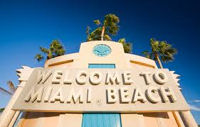

Why I love German Vehicles
The map above points of a few of the places that I have travelled to thus far, and also one place where I really hope to travel one day, which is the beautiful island of Cuba.
Toronto
 Toronto, Ontario is the beautiful place that I call home. This exquisite metropolitan is one of the most popular and populous cities in the world
which is home to many great sports teams and a very diverse multicultural community.
Toronto, Ontario is the beautiful place that I call home. This exquisite metropolitan is one of the most popular and populous cities in the world
which is home to many great sports teams and a very diverse multicultural community.
Miami
 The first time I went to miami a few years ago I fell in love with this beautiful city, it is as beautiful as its people and i hope to go back one day soon!
Jamaica
The famous island of Jamaica where my parents call home had me inlove the first time I went. I every time I go I never want to leave because the rhythms and the food make me never want to leave.
Cuba
The birthplace of my grandmother is one place I long to go. I hope to travel here one day and see the beauty that this wonderful place has to offer!